Chapter 1
Listening
The Human Voice: According to evolutionary science, this glorious instrument exists only through chance. Biologically, the larynx—without which there is no voice—is nothing more than a sphincter valve designed to protect the airway. When this valve is firmly closed, pressure can be raised in the torso to help with a variety of physical actions ranging from childbirth and defecation to lifting heavy objects. How-ever, when this valve is gently closed during exhalation, only partially blocking the flow of air, the true moment of serendipity occurs; it begins to vibrate. These vibra-tions travel the air through the throat and mouth, where they are transformed into sound we recognize as speech. The final miracle occurs when the sounds of speech are sustained in a musical fashion: singing.
Subsequent portions of this text will examine the physical properties of the voice, including aspects of anatomy and physiology, acoustics, resonance and voice pro-duction. All of these areas have been thoroughly studied by voice science and can be described with great objectivity. Singing, however, is a highly subjective, personal en-deavor. Take a moment to think about the voices you admire—using nothing more than your imagination, you probably can hear them quite well. If you prefer operatic repertoire, you likely will imagine the voices of great singers ranging from Callas and Caruso to Fleming and Domingo. If your tastes run to popular music, you can no doubt hear the superstars of your generation, be they Frank Sinatra, Ella Fitzgerald, Elvis Presley, Bob Dylan, Madonna, Carrie Underwood, or Lady Gaga. Your imagina-tion also allows you to hear the voices of friends, family members and various celebri-ties. Use your imagination for a moment to hear the voice of the President of the Unit-ed States singing Happy Birthday to You; it might not be aesthetically pleasing, but you can hear it in your head if you try!
How do we describe the sounds of singing? How might we speak to the vocal dif-ferences between Michael Bolton and Enrico Caruso? Few—especially those of us who come to singing from the artistic community—would do so using the technical language of voice science:
- …his singing is characterized by a curious imbalance between the fundamen-tal frequency and the singer’s formant, exacerbated by the presence of in-harmonic overtones, further complicated by excess rates of jitter and shim-mer…
We are much more likely to describe a voice subjectively, using adjectives and meta-phors:
- …his voice is too dark and has a rough, coarse quality, at times becoming whiney and nasally…
Or perhaps:
- …her plummy tones floated lyrically and effortlessly above the orchestra…
The language used to describe vocal sound is rich and varied. Many of the follow-ing terms will be familiar: lyric, dramatic, breathy, clear, heavy, coarse, nasal, vibrant, free, forced, wobbly, ringing, chiaroscuro, focused, steely, plummy—the list could go on and on. These are all subjective terms that might mean different things to different people. As an example, consider the concept of a “free” voice. Do you remember the first time you heard a genuine opera singer? Did you like the sound you heard? If your previous experience with singers centered on commercial music or participation in an amateur choir, you might well have found the operatic singing to be forced and unnat-ural sounding. Indeed, many devotees of the various genres of commercial (non-classical) music earnestly maintain this point of view for a lifetime. If, however, you consider yourself to be an opera aficionado, you are likely to hear this style of singing as the ultimate expression of free, natural vocalism. In this regard, singing might be compared to dance: ballet and tap each require great skill to master, yet each has its unique aesthetic. What seems completely free, natural and appropriate to one disci-pline is foreign to the other.
A single, universally accepted vocabulary describing singing is as elusive as a single, universally accepted method of breath management. A vocal characteristic one singer hears as vibrato might be labeled by another as shimmer or spin. One singer’s ideal resonance is another’s nasality. The expressive, raspy sound suitable for a jazz singer might be a sign of vocal damage in an opera singer.
One convenient way to describe vocal sound is through paired comparative words that can be placed on a continuum, such as dark/bright, dramatic/lyric, or clear/breathy. The following terms are not necessarily qualitative—a dark voice is not better or worse than a bright voice—nor are they intended to be comprehensive; they can, however, serve as a starting point to help refine listening skills. Examples will be presented to demonstrate each of these vocal descriptors. Later, you will have the opportunity to listen to and evaluate a variety of singers, classical and commercial, and to compare your perceptions to those of others.
Please note: For each set of comparison (e.g. Bright ~ Dark), you will hear four examples by sung by women and men: two for each of the exemplars, presented in that order. For example, in this sound clip, you first will hear a woman and a man demonstrating sound qualities that are on the brighter end of the continuum, followed by a different woman and man demonstrating sound qualities on the darker end of the continuum. The same examples are available at www.voxped.com/.
Bright ——— Dark (1/1 )
The continuum from bright to dark offers a prime example of the complex nature of the singing voice. Few voices are exclusively one or the other; most contain elements of both. A term is borrowed from the visual arts to describe this phenomenon, chiaro-scuro, which literally means light/dark. Brightness in the sound provides brilliance and carrying power; darkness provides warmth and fullness. In acoustic terms, bright and dark sounds vary according to the relative amplitude of their overtones. Bright sounds have stronger high-pitched overtones; dark sounds have stronger low-pitched over-tones. These acoustic characteristics will be discussed in detail later in Your Voice: An Inside View. Two of the most famous tenors from the current time provide excel-lent examples of voices balanced differently in terms of chiaroscuro: Jonas Kaufmann (darker) and Juan Diego Flores (brighter).
Twang ——— Loft (1/2)
Twang and loft are qualities of vocal resonance. Twang resonance results from a narrowing of the vocal tract to produce a brassy, edgy timbre, which might be accom-panied by overt nasality. Loft resonance is almost the direct opposite, created by re-laxing and enlarging the pharynx, and lifting the soft palate. The speaking voices of Kristin Chenoweth and James Earl Jones provide clear examples of twang versus loft resonance. In singing, twang is a prominent feature of vocal styles ranging from belt-ing in musical theater to the nasally twang often associated with bluegrass music. Opera singers who specialize in character roles, such as Goro in Madama Butterfly or Mime in Siegfried, frequently employ significant twang. While loft is most often as-sociated with classical singing, it sometimes is prominent in commercial singing as well. Bing Crosby, Dean Martin and Leon Redbone all provide examples of popular singers with “lofty” voices.
Back ——— Forward (1/3)
Back (sometimes called swallowed) and forward are indications of perceived tone placement. Back tones are often somewhat dark in tonal color and tend to give the impression of being caught in the throat or back of the mouth. Frequently, this is the result of excess tension carried in the root of the tongue. By contrast, forward tones are often described as resonating in the cheekbones—a sensation singers describe as being in the mask—and have more brightness within the chiaroscuro mix.
There are strong interrelationships among these first three categories of voice de-scriptions. Dark sounds will often have elements of loft resonance and back place-ment. Bright sounds will often have elements of twang resonance and forward place-ment. It is important to remember, however, that few voices are exclusively at one end of the spectrum or the other. Gifted singers—the ones we most admire and ap-preciate—generally have a balance of bright and dark timbre, loft and twang reso-nance, and forward or back placement.
Lyric ——— Dramatic (1/4)
The terms lyric and dramatic, which might be considered synonymous with light and full, are indications of both the size and color of a voice. In the operatic world, the entire voice classification system is based largely on this issue. For example, the size of a soprano’s voice—smaller or larger—helps determine if she is best suited to sou-brette, lyric, lyric-coloratura, dramatic-coloratura, spinto or dramatic repertoire. Of course, other factors come into play as well, including her timbre, facility with melis-matic passages, overall range and comfortable tessitura, as well as her physical ap-pearance. Chiaroscuro also may be relevant to the size of a voice. Dramatic voices are often, though not always, darker, while lyric voices are often, though not always, brighter. Anna Netrebko (lighter) and Deborah Voigt (fuller) are well known operatic examples of outstanding lyric and dramatic voices.
Clear ——— Breathy (1/5)
The clarity or breathiness of a tone is directly related to the amount of air that es-capes with the sound. Physiologically, breathiness is the result of incomplete closure of the glottis (the space between the vocal folds), and is often made worse by poor breath support. Breathiness is rarely heard in professional singers trained in the clas-sical tradition; it is very common, however, in many forms of commercial music. Jazz lovers will remember the very breathy voice of Mel Tormé, who was affectionately known as the Velvet Fog.
Clean ——— Raspy (1/6)
The continuum from clean to raspy reflects the amount of extraneous noise in vo-cal sound. Raspiness results from aperiodic events during vocal fold vibration, possi-bly caused by physiological and/or pathological voice disorders. The difference be-tween raspiness and breathiness is easily heard: Breathiness sounds like white noise or a hiss in the background of the tone; raspiness sounds like hoarseness and may include coarse, gravelly sounds. A distinction can be made between raspiness that is induced by a singer for artistic reasons and that over which the singer has little or no control. Some singers, including Louis Armstrong and George Hearn (the original Sweeney Todd in Sondheim’s musical), deliberately induce a raspy sound by making their false vocal folds rattle against each other. (See Chapter 8 for a discussion of the anatomy involved in false vocal fold phonation.) Operatic singers are sometimes heard to induce deliberate raspiness to depict moments of extreme emotion. In other singers, such as the inimitable Janice Joplin of the 1960’s, raspiness might result from pathological voice damage caused by prolonged abuse, or overuse in a strenuous performing schedule. At the current point in history (early 21st Century), popular sing-ers often employ a raspy, scraping onset of tone for expressive purposes, as exem-plified by icons such as Michael Bolton and Macy Gray.
Healthy ——— Damaged (1/7)
Aural evidence of a healthy versus damaged voice is closely related to the two previous characteristics: clear/breathy and clean/raspy. Healthy sounding voices are generally free of unwanted noise. There is little excess breathiness, and raspiness is only induced for stylistic or expressive reasons. Hoarse, raspy sounds that are be-yond the direct control of the singer are potential signs of vocal damage. Other symp-toms include cracking or popping noises, diplophonia—the unintentional sounding of two simultaneous pitches—chronic problems with intonation, and excessively wide and/or slow vibrato. Some of these symptoms can be the natural consequence of ex-tended voice use and aging. Fans of Frank Sinatra will note the gradual increase in a raspy, throaty quality as he aged and his voice gradually deteriorated.
Conversational ——— Ringing (1/8)
Classically trained singers generally produce a sound that is characterized by a quality known as ring. Acoustically, ring is caused by vocal tract amplification of very high overtones in the pitch range roughly equivalent to the highest octave of the piano keyboard. Ring is essential for singers who must project their voices over the sound of an orchestra without the benefit of electronic amplification. Ring is much less im-portant for electronically amplified singing, regardless of genre; indeed, if it is present in the tone, amplification may make the voice sound unnaturally bright and harsh. Ra-ther than using ring, non-classical singers often employ a more speech-like, conver-sational timbre, as typified by artists such as Feist, Ani di Franco and M. Ward.
Nasal ——— Non-Nasal (1/9)
Nasality is the term used to describe a tone that actively resonates in the nasal cavity. It is caused by a low, relaxed soft palate that fails to seal the passageway from the back of the throat into the nose. When the soft palate is raised, the nose is disen-gaged as a vocal resonator (Figure 1/1).

You can prove this to yourself by sustaining a pitch with your palate lifted so no air travels into your nose. Gently pinch and release your nostrils—if your soft palate is completely raised, you will not hear any change in timbre. Nasality can coexist with various other vocal timbres, particularly twang and loft. In classical singing, it is sometimes used by tenors and baritones as a means to help negotiate the upper passaggio region. The aesthetic merits of this approach are best left to the singer and listener: some like it, some don’t. Nasality is also a natural consequence of language. In English, this only includes voiced, nasal consonant sounds, such as [n], [m] and [ŋ]. In languages including French, however, some vow-els are also nasalized. A singer who cannot control nasality will have great difficulty differentiating between French words such as mon (my: [mõ]) and mot (word: [mo]), which differ only in the nasality of the sustained vowel.
Free ——— Forced (1/10)
Free versus forced production is perhaps the most subjective of all the de-scriptors suggested in this text. As previously discussed, assessment of vocal free-dom is generally based on personal experience. To the teenager with little or no expo-sure to classical music, the latest star from MTV will sound utterly free and natural, while singers at the Met seem forced and contrived. The typical patron (or singer) at the Met, however, likely has the exact opposite impression. What is vocal freedom? Perhaps this is an illusory concept. The operatic tenor in the role of Rodolfo must make the audience believe his high C in Che gelida manina is completely free and easy to sing; his body, however, must work very hard to produce the note. As a gen-eral guideline, we might apply the following rule: the amount of force should always be appropriate to the desired vocal quality. Singers—in all styles—are likely to increase the perceived force to depict moments of strong emotion. Forced sounds give the im-pression of being taxing on the singer. If prolonged, they will induce hoarseness or noticeable vocal fatigue. Free tones, on the other hand, give the impression of ease. A singer should be able to continue in this fashion without noticeable fatigue even after extended periods of singing.
Vibrato ——— Non-Vibrato (1/11)
Vibrato can be defined as a long-term vibration or oscillation superimposed on a sustained frequency (pitch). What exactly does this mean? Imagine a soprano sus-taining the pitch A4, located a major sixth above middle-C on the piano keyboard. This pitch is also frequently referred to as A-440, the pitch to which the orchestra tunes (though some now creep up to 444 or even higher). The number 440 indicates the frequency of the pitch (number of vibrations per second). If the soprano sings this pitch with vibrato, two simultaneous frequencies result: 440 vibrations per second for the sustained tone; and four to seven vibrations per second within her vibrato. Vibrato is a normal occurrence in well-produced, free singing, and might be related to the body’s natural tremor rate. It has two components: pitch and loudness. In a normal vibrato, pitch may vary by as much as a minor second above and below the center, with a compass of a major second or more from top to bottom. Ideally, loudness sub-tly pulsates at the same rate, emphasizing the center pitch.
Vibrato often varies in its regularity (steadiness), especially in younger singers whose vocal technique is not fully established. Well-balanced vibrato usually features equal portions of pitch and loudness modulation that occur in perfect synchronization; if these two facets are out of sync, the voice is likely to sound rough and intonation will probably suffer. Pitch-dominant vibrato, with no modulation in loudness, resembles a perpetual slow trill, which can make it difficult to determine what pitch actually is being sung. Loudness-dominant vibrato, with little or no modulation in pitch, can have a bleating quality, not unlike a child imitating the call of a Billy goat.
Vibrato can be visualized and quantified through computer voice analysis, which is discussed in greater detail in Chapter 5. The difference between steady and unsteady vibratos is graphically presented here (Figure 1-2); the wavy line shows the extent and rate of pitch change.

Not all singers, however, employ vibrato. Classical music from the Baroque and Renaissance periods is often approached with a lighter, purer, and straighter tone. This is especially true for choral singing. In commercial music genres, vibrato may or may not be present. Often, it appears exclusively as an expressive device, used sparingly to decorate a final, sustained note in a phrase.
Wobble ——— Flutter (1/12)
Wobble and flutter are assessments of the speed and intensity of vibrato. A healthy, well-balanced vibrato will oscillate in the approximate range of 4.5 to 7 cycles per second (cps). Wobble can be defined as a very slow vibrato, usually less than 4.5 cps, which also is particularly wide in pitch compass, often exceeding a major second from top to bottom. Excessive wobble can result from poor singing technique, pro-longed periods (years) of taxing voice use, neurological disorders, or simple old age. Good vocal hygiene, including maintenance of pulmonary fitness, can help prevent the development of wobble; indeed, many singers continue to produce stable, wobble-free tones with healthy vibrato rates for an entire lifetime. By contrast, flutter is a rapid vi-brato, usually more than 7 cps, which also has a narrow pitch compass. Quick, somewhat fluttery vibratos are actually helpful in some ways for singers who special-ize in highly miasmatic repertoire; by synchronizing the speed of the vibrato with changing pitches in coloratura passages, extremely quick velocity can be achieved with great musical accuracy.
Aesthetic taste in vibrato speed has changed over time. Recordings from earlier in the twentieth century generally show a quicker vibrato than is the current norm. Some singers, teachers and voice scientists have speculated that the gradual change to slower, wider vibratos is a consequence of ever-larger performing venues and the resulting need to produce a louder, fuller sound.
In Tune ——— Out of Tune (1/13)
Objectively, intonation is a binary proposition: a musical pitch either is or isn’t in tune. So, if your target pitch has a frequency of 440 cps but you only make it to 439 cps, you are singing flat—at least technically speaking. Fortunately, tuning in the real world is much more subjective. As demonstrated by vibrato, listeners generally will tolerate some deviation from pure intonation. Singers in all genres sometimes bend the pitch a little for expressive purposes, including blue-notes in jazz and portamenti in operatic singing.
Good Diction ——— Poor Diction (1/14)
Singers are the only musicians who perform words. A pianist must play the music of Debussy expressively and in the correct musical style; he does not, however, need to speak (or at least pronounce) French. A Debussy song must also be sung expres-sively in the proper musical style, but its French text must be pronounced with ac-ceptable diction—whether or not the singer speaks the language. Issues exist with diction on several different levels, but above all, the text must be intelligible. Most peo-ple can recall hearing performances, live or recorded, with garbled, difficult to under-stand text. In the 1960’s, great controversies arose among people trying to decipher the words to the popular song Louie, Louie. (Has anyone ever definitively transcribed them?) Beyond intelligibility, good diction must be accurate and appropriate to the gen-re. The trilled-R’s, strong plosives and prolonged fricative consonants needed to pro-ject an operatic text into a large theater are out of place in more intimate settings, from recital halls to coffeehouses. Good diction sounds easy and natural; excessively strenuous efforts to “spit out the words” result in artificiality.
Stylistically Correct ——— Stylistically Incorrect (1/15)
As the jazz standard states: It don’t mean a thing if it ain’t got that swing. Virtually every musical genre has unwritten rules that define style and standards of perfor-mance practice. To be successful, a performer must know, understand and execute these rules. This applies equally to the singer of a Mozart recitative, who must under-stand the vagaries of appoggiatura, and the singer of a song by George Gershwin, who must know to assimilate dotted rhythms and duplets into lazy triplets, allowing the music to “swing.” Examples abound of artists who are (or were) iconic performers in one genre who “crossed over” to other styles with little or no success. Frank Sinatra was a gifted big band singer of standards from what is now often called the Great American Songbook—songs of popular composers including Richard Rogers, Jerome Kern, George Gershwin, Cole Porter and many others. Later in his career, he also performed rock songs original to groups such as The Beatles and Bread. These ef-forts, however, were generally less convincingly stylistic: he didn’t really know and follow the appropriate rules of that style. Classical singers are equally capable of fol-lowing the wrong stylistic rules. Recordings abound of music by Bach and Handel, performed in a style more closely resembling that of Brahms and Verdi.
Occasionally, pop musicians attempt to cross over to classical styles, and vice versa. In recent years this list includes Barbara Streisand and Michael Bolton who moved from commercial to classical genres in their recordings Classical Barbara and My Secret Passion. Much more common—though generally equally stylistically incor-rect—are the crossover recordings of famous opera singers: Placido Domingo’s duet album with the folksinger John Denver, José Carreras’ recordings of music by Bern-stein and Andrew Lloyd Webber, Pavarotti’s numerous concerts and recordings with “friends” from the pop music scene. The list goes on and on, featuring many of the important opera singers since the dawn of the age of recording. A few, such as Dawn Upshaw (I Wish it So), are quite successful in mastering crossover styles; in this au-thor’s opinion, however, more—if not the majority—are not.
Critical Listening
Most readers of this text probably spend many hours every week listening to singers. Some do so professionally, teaching singing lessons or directing choirs. Oth-ers are connoisseurs of specific genres, regularly attending concerts, recitals, theat-rical and operatic productions. All likely listen to recordings of personal favorites. The listening examples included with Inside View represent a spectrum of styles and vocal qualities. Readers are encouraged to listen with open ears, listening critically for de-tails in the sound—as this author’s teacher used to admonish: “do not listen for your own enjoyment!” Rather, listen for the sake of sharpening your ears.
The recorded examples from this text have been used on many occasions for lis-tening exercises in voice pedagogy classes at all levels. Class members generally report greater ease in distinguishing vocal characteristics of singers whose gender and voice type match their own. This is only natural, since singers tend to be very empathetic listeners, sensing technical aspects of others in their own bodies. As you complete these listening exercises, try to increase your empathetic awareness of other singers—regardless of gender and voice type—through careful, critical listening.
As you listen, you will be evaluating each performance according to the criteria established in this chapter (dark/bright, etc.). Use the accompanying computer pro-gram to record your judgments (a printed form is also available in Appendix 1). After you have listened and made your evaluations, you will be able to see the responses of other listeners to the example, comparing your “ears” to theirs. Finally, there will be a brief discussion of each example, pointing out special characteristics.
Listening Exercise 1: Operatic Soprano (1/16)
Natalie Dessay, singing an excerpt from Salaviei by Alexander Alabiev (complete recording is available from EMI Classics, catalogue number 7243 5 56565 2)
In this brief excerpt, Ms. Dessay provides an excellent example of bright, clear, and vibrant singing. Diction issues are irrelevant, since the excerpt consists solely of an extended cadenza sung to the single syllable, “ah.” Staccato, pianissimo high notes and a seamless diminuendo on D6 (a whole step above soprano high C) pro-vide evidence of healthy vocal production. A panel of experienced listeners rated this excerpt as follows:
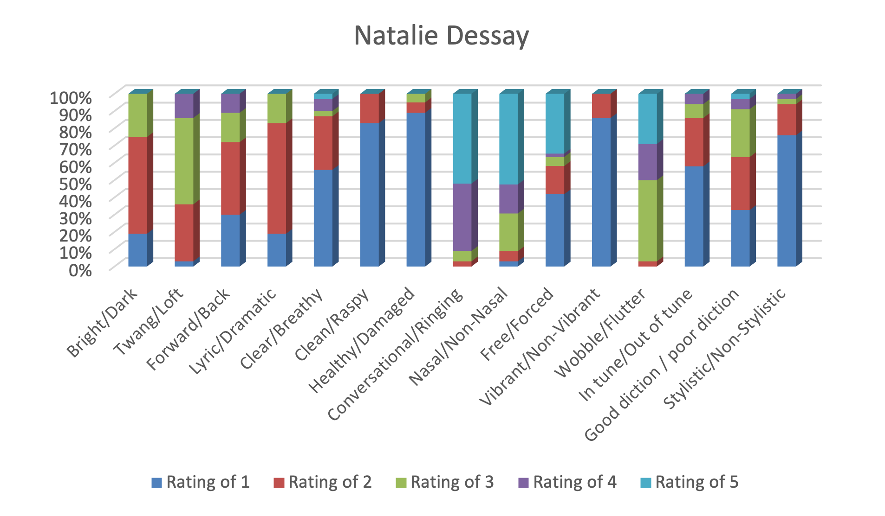
Figure 1.3: Listening panel responses to performance by Natalie Dessay*
Listening Exercise 2: Operatic Soprano (1/17)
Jessye Norman, singing an excerpt from Morgen by Richard Strauss (complete recording available from Philips, catalogue number 411 052-2)
This obviously is a very different type of soprano voice than was heard in Listen-ing Exercise 1. The sound is much warmer and darker, and is obviously produced by a larger, more dramatic instrument. Hints of breathiness are heard at times, especially during pianissimo high notes. The voice is very vibrant with a relatively quick vibrato rate. In this example, Ms. Norman sings with a vibrato rate approaching 6.4 cycles per second, which is significantly faster than Ms. Dessay’s vibrato of 5.3cps. The ob-jective measurement of the two singer’s vibratos is shown in Figure 1-4.
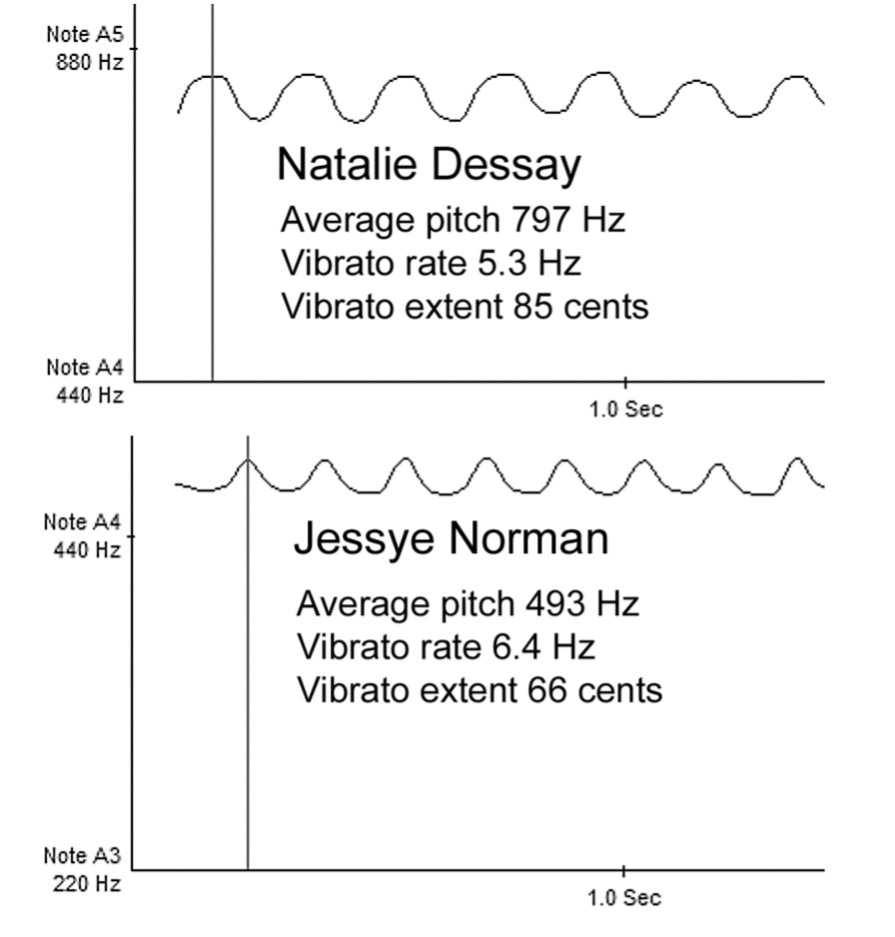
Figure 1.4: Comparison of Dessay and Norman vibratos
The variation in vibrato speed between these two singers is somewhat of a sur-prise, because in general, singers with larger, heavier voices tend to be perceived as having slower, wider vibratos than singers with lighter, brighter voices. Compare your assessment of this example to those from a group of experienced listeners:
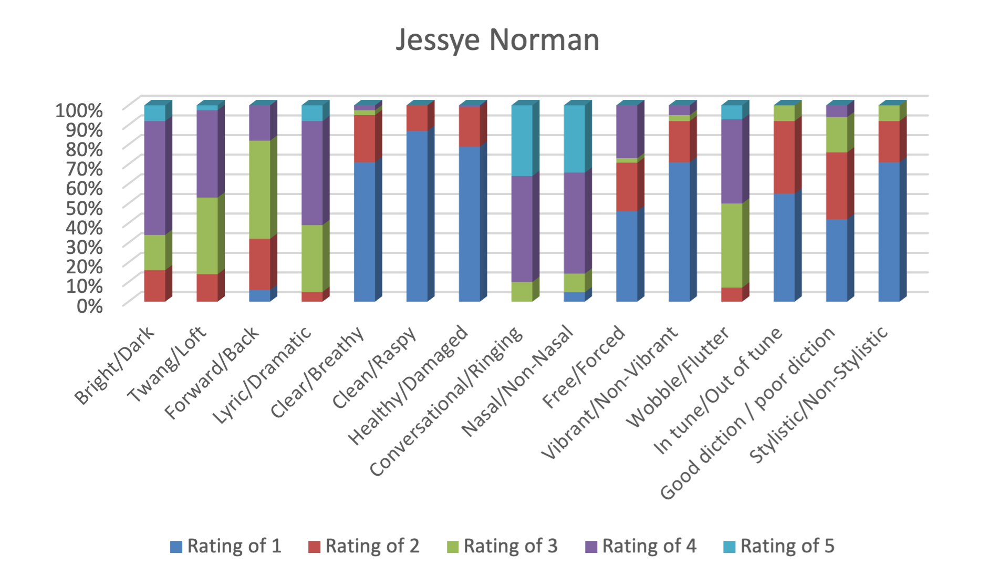
Figure 1.5: Listener ratings for Norman
Listening Exercise 3: Commercial Soprano (1/18)
Ani di Franco, singing her own composition Work your way Out (complete recording available from Righteous Babe Records, catalogue number RTR-001-D)
This example moves us from the realm of singing that must be projected solely through the power of vocal resonance to singing that is projected through electronic amplification. As such, its characteristics are very different. The overall tone is much more conversational with a gentle, light approach. Vibrato is used sparingly, if at all. The tone has more breathiness than either of the previously heard classical singers; breath is also used as a rhythmic device within the song. Her diction is remarkably clear and natural. Stylistically, the performance is perfectly appropriate: one might not imagine Ms. di Franco singing Salaviei, but neither would one expect Ms. Norman to sing Work your way Out. The panel of experienced listeners had a bit more trouble rating this example, primarily due to lack of close familiarity with the singing style.
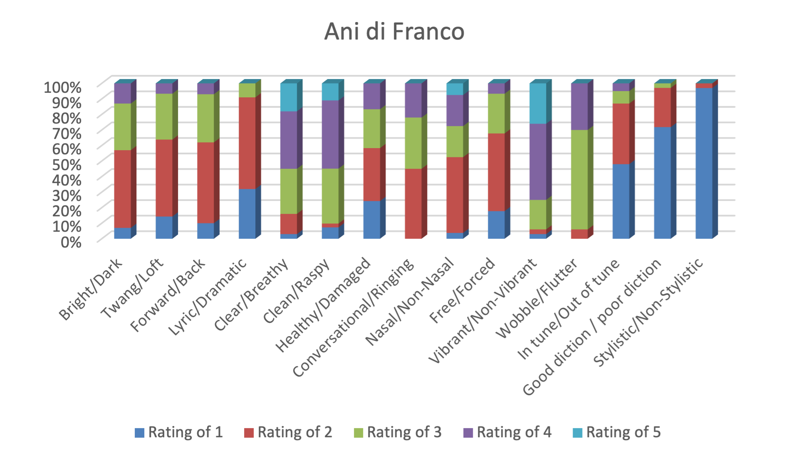
Figure 1.6: Listener ratings for di Franco
*50% of evaluators made no indication on the wobble—flutter continuum
Listening Exercise 4: Operatic Soprano (1/19)
Maria Callas singing “Depuis le jour” from Charpentier’s Louise (complete record-ing available from EMI Classics, catalogue number CD-EMX-2123)
This recording of the great Callas—affectionately known as “La Divina”—does not show her at her prime. Listeners often have trouble evaluating her singing strictly us-ing the criteria of this book because of significant inconsistencies in the vocal produc-tion: some tones are clear, others are breathy; some are in tune, some are not; some have a balanced vibrato, others wobble. In spite of these inconsistencies, the mag-netism of her artistry still manages to engage us. Callas was a rather controversial artist, even in her own day; few singers have approached opera roles with such raw emotional power.
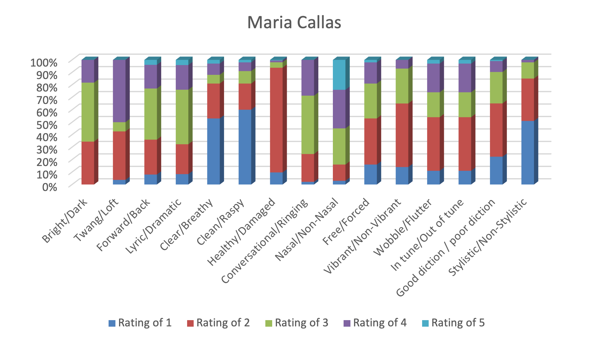
Figure 1-7: Listening panel responses to performance by Maria Callas
Listening Exercise 5: Operatic Bass-Baritone (1/20)
Bryn Terfel singing the aria “Se vuol ballare” from Mozart’s Le Nozze di Figaro (complete recording available from Deutsche Grammophon, catalogue number D108057)
This recording, which dates from the beginning of Mr. Terfel’s career, displays a wide range of expressive timbre. The text of the aria sarcastically states: “if you want to dance, my pretty count, I’ll play the tune on my little guitar.” Terfel expresses this biting sarcasm in a variety of ways, including forced, rather pressed sounds, subtle hints of raspiness, and by mocking with insincere sweetness. Through all these changes of color, his voice remains uniformly vibrant with clearly enunciated text and appropriate “Mozartean” style.
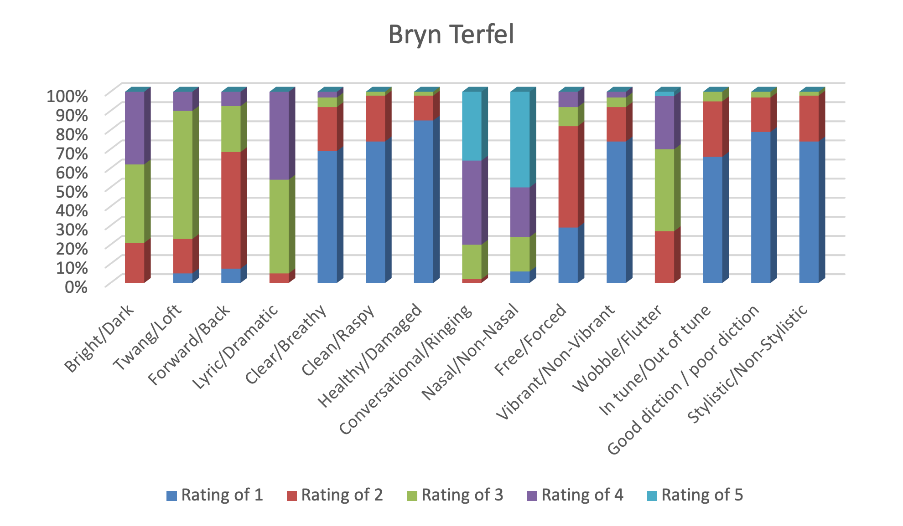
Figure 1-8: Listening panel responses to performance by Bryn Terfel
Listening Exercise 6: Operatic Tenor (1/21)
Luciano Pavarotti singing the aria “Di quella pira” from Verdi’s Il Trovatore (com-plete recording available from Decca, catalogue number B000023ZF5)
This brief excerpt from Il Trovatore shows Pavarotti in what many consider to be his prime. The voice is clean, clear, ringing, vibrant, and sounds remarkably free, es-pecially considering the taxing tessitura. A sustained C5 (tenor high C) appears at the climax of this excerpt. Listeners less familiar with the sound of operatic tenors might have difficulty analyzing the characteristics of Mr. Pavarotti’s singing. On more than one occasion, I have been asked if tenors—including Pavarotti—are in pain when singing those “loud high notes.” Remember, there is nothing natural about singing in this manner: it is a style that almost always requires extensive training and practice, not to mention a healthy dose of native talent. Listening also benefits from training and practice.
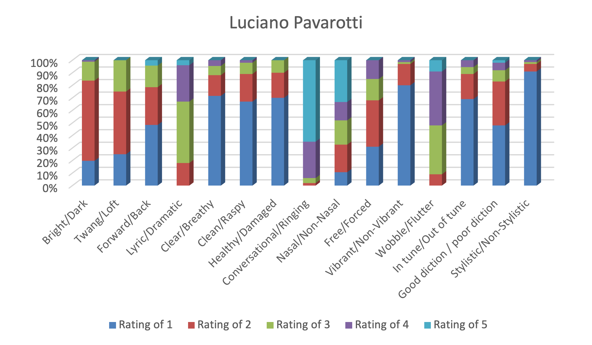
Figure 1-9: Listening panel responses to performance by Luciano Pavarotti
Listening Exercise 7: Commercial Baritone (1/22)
Frank Sinatra singing The Lady is a Tramp by Richard Rogers (complete record-ing available from Capitol, catalogue number CDL-57252)
Sinatra—need we say more? The extent to which this man’s voice and style per-meates popular culture is truly remarkable. Very few people, teenaged through geriat-ric, do not instantly recognize and identify the singing of “old blue eyes.” Why is this? First, Sinatra’s voice had unique timbre, with elements of bright, reedy and vibrant twang balanced by round, mellifluous warmth. Second, and perhaps more importantly, was his great sense of musical style; this guy could swing. As you listen to the rec-orded example, try to be aware of how Sinatra used vibrato and sustained tones to generate his characteristic style. During main melodic notes, prior to final notes of phrases, vibrato is used very sparingly, if at all. Last notes of phrases fall into two categories: if the note features a word or syllable that ends in an unvoiced or plosive consonant, its duration is short and vibrato is absent; if the final word or syllable ends with a vowel or voiced consonant, it is sustained, and vibrato is added. Classical sing-ers who cross over into the repertoire of the Great American Songbook will greatly improve their style by following these two simple rules concerning phrase endings.
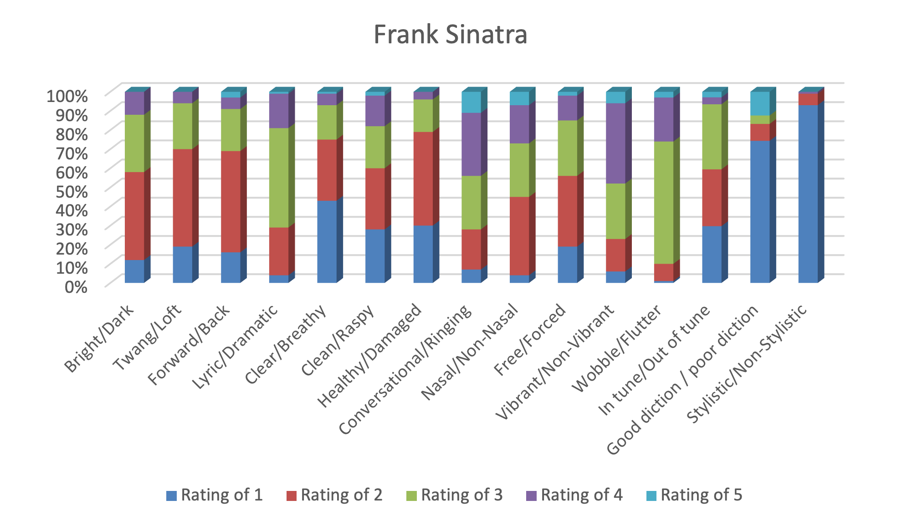
Figure 1-10: Listening panel responses to performance by Frank Sinatra
Listening Exercise 8: Commercial/Operatic Tenor (1/23)
Michael Bolton singing “Nessun Dorma” from Puccini’s Turandot (complete recording available from Sony Classical, catalogue number SK63077)
This recording is a relative musical rarity: a successful commercial or pop musi-cian crossing over to sing classical music. Taking that into consideration, the perfor-mance is remarkably good; indeed, few budding operatic tenors possess a B4 as vi-brant, ringing and opulent as Mr. Bolton’s. Nonetheless, most listeners become aware within the first note or phrase that the performance is not by a “real” opera singer. Sustained, non-climactic tones are too noisy, with an overt breathy, raspy quality. Standard rules of operatic performance practice are not followed; rhythms are exces-sively altered and portamenti are too strong. Listen for the scraping, bluesy vocal on-set at the beginning of the phrase all’alba vincerò; this stylistic element is perfectly ap-propriate in Bolton’s commercial genre, but is out of place in an operatic aria. In spite of these stylistic difficulties, one hears unbridled enthusiasm in this singing. Bolton ti-tled this crossover CD My Secret Passion—he no doubt helped inspire a passion for this repertoire in many, many others who had never previously considered listening to opera.
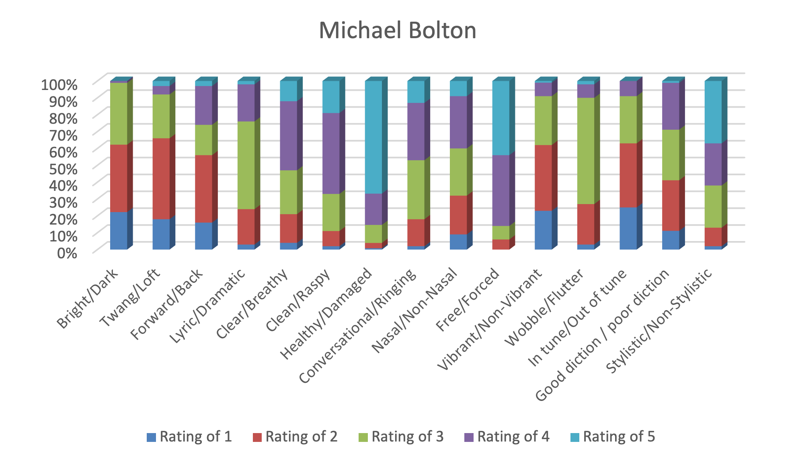
Figure 1-11: Listening panel responses to performance by Michael Bolton
Listening Exercise 9: Operatic/Commercial Tenor (1/24)
José Carreras singing “Maria” from Bernstein’s West Side Story (recording available from Polygram Records, catalogue number 457199)
This excerpt comes from the enigmatic 1998 recording of West Side Story, which the composer conducted with a bevy of international opera stars cast in the leading roles. Some people hear this recording as the ultimate version of the work; others hear it as contrived and overwrought. Regardless, the beauty of Carreras’ voice shines through in Maria, with warm, vibrant timbre and wide expressive range.
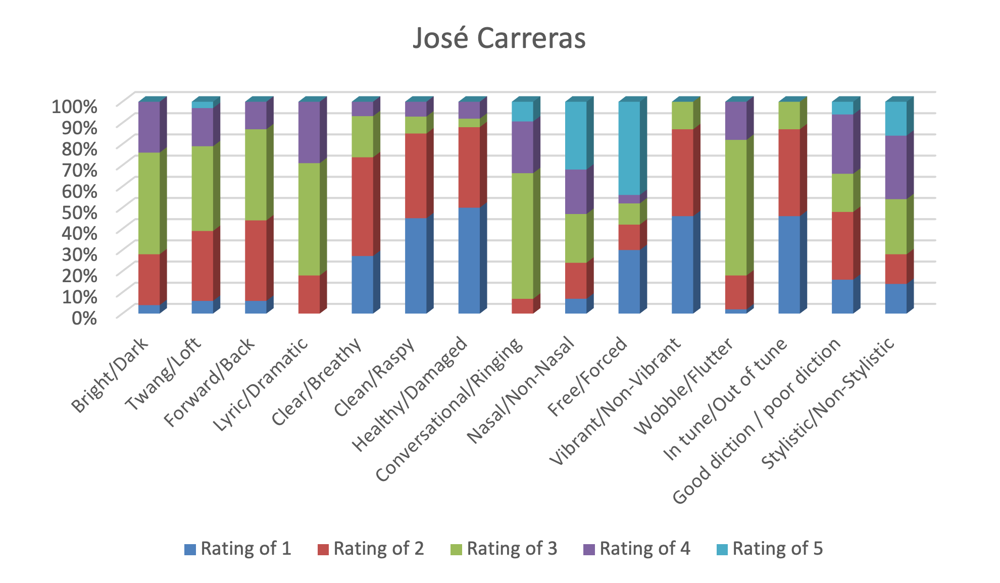
Figure 1-12: Listening panel responses to performance by José Carreras
Listening Exercise 10: Commercial Soprano/Mezzo (1/25)
Enya, singing her own composition Fallen Embers (complete recording available from Warner Brothers, catalogue number 47426)
Enya provides another example of amplified singing with breathy, floated tones effortlessly suspended over a background of synthesized orchestra. A quick, relative-ly even vibrato is heard in almost every sustained tone, an unusual characteristic within this musical genre. Changes of register are very apparent. Lower tones, in the so-called “chest voice,” are quite clear and strong. Higher tones, in the so-called “head voice,” are much breathier and weaker sounding.
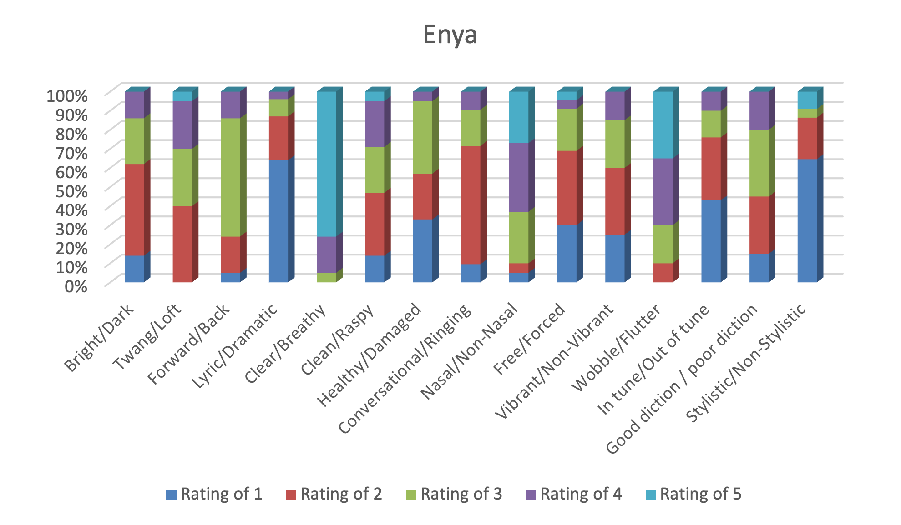
Figure 1-13: Listening panel responses to performance by Enya